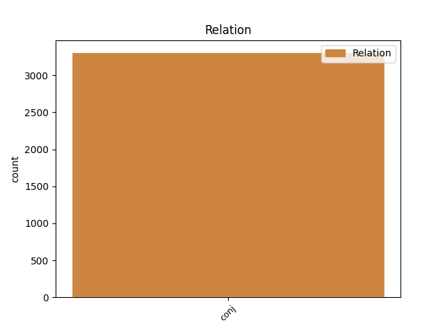
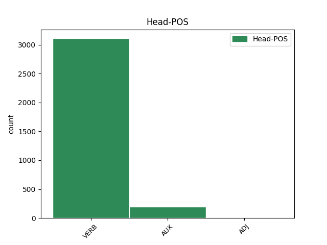
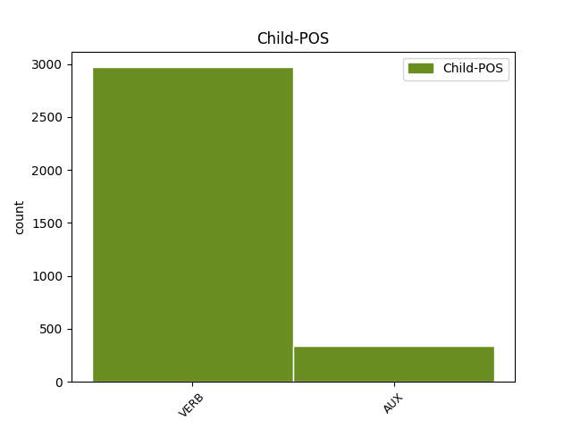

Distribution of features within this leaf



Agreement Rules sorted by frequency.
- When the dependent token is the conjunct(conj) of the head token, and the head token is VERB and the dependent token is VERB.
1 Danda _ _ _ _ 0 _ _ _
2 igitur _ _ _ _ 0 _ _ _
3 opera _ _ _ _ 0 _ _ _
4 est _ _ _ _ 0 _ _ _
5 ut _ _ _ _ 0 _ _ _
6 etiamsi _ _ _ _ 0 _ _ _
7 aberrare _ _ _ _ 0 _ _ _
8 ad _ _ _ _ 0 _ _ _
9 alia _ _ _ _ 0 _ _ _
10 coeperit _ _ _ _ 0 _ _ _
11 ad _ _ _ _ 0 _ _ _
12 haec _ _ _ _ 0 _ _ _
13 revocetur revoco VERB V- Mood=Sub|Number=Sing|Person=3|Tense=Pres|VerbForm=Fin|Voice=Pass 0 _ _ _
14 oratio _ _ _ _ 0 _ _ _
15 sed _ _ _ _ 0 _ _ _
16 utcumque _ _ _ _ 0 _ _ _
17 aderunt adeo VERB V- Aspect=Perf|Mood=Ind|Number=Plur|Person=3|Tense=Past|VerbForm=Fin|Voice=Act 13 conj _ ref=1.135
1 Animadvertendum _ _ _ _ 0 _ _ _
2 est _ _ _ _ 0 _ _ _
3 etiam _ _ _ _ 0 _ _ _
4 quatenus _ _ _ _ 0 _ _ _
5 sermo _ _ _ _ 0 _ _ _
6 delectationem _ _ _ _ 0 _ _ _
7 habeat habeo VERB V- Mood=Sub|Number=Sing|Person=3|Tense=Pres|VerbForm=Fin|Voice=Act 0 _ _ _
8 et _ _ _ _ 0 _ _ _
9 ut _ _ _ _ 0 _ _ _
10 incipiendi _ _ _ _ 0 _ _ _
11 ratio _ _ _ _ 0 _ _ _
12 fuerit _ _ _ _ 0 _ _ _
13 ita _ _ _ _ 0 _ _ _
14 sit sum AUX V- Mood=Sub|Number=Sing|Person=3|Tense=Pres|VerbForm=Fin|Voice=Act 7 conj _ ref=1.135
15 desinendi _ _ _ _ 0 _ _ _
16 modus _ _ _ _ 0 _ _ _
1 Sit sum AUX V- Mood=Sub|Number=Sing|Person=3|Tense=Pres|VerbForm=Fin|Voice=Act 0 _ _ _
2 ergo _ _ _ _ 0 _ _ _
3 hic _ _ _ _ 0 _ _ _
4 sermo _ _ _ _ 0 _ _ _
5 in _ _ _ _ 0 _ _ _
6 quo _ _ _ _ 0 _ _ _
7 Socratici _ _ _ _ 0 _ _ _
8 maxime _ _ _ _ 0 _ _ _
9 excellunt _ _ _ _ 0 _ _ _
10 lenis _ _ _ _ 0 _ _ _
11 minime _ _ _ _ 0 _ _ _
12 que _ _ _ _ 0 _ _ _
13 pertinax _ _ _ _ 0 _ _ _
14 insit insum VERB V- Mood=Sub|Number=Sing|Person=3|Tense=Pres|VerbForm=Fin|Voice=Act 1 conj _ ref=1.134
15 in _ _ _ _ 0 _ _ _
16 eo _ _ _ _ 0 _ _ _
17 lepos _ _ _ _ 0 _ _ _
1 Multi _ _ _ _ 0 _ _ _
2 autem _ _ _ _ 0 _ _ _
3 et _ _ _ _ 0 _ _ _
4 sunt sum AUX V- Mood=Ind|Number=Plur|Person=3|Tense=Pres|VerbForm=Fin|Voice=Act 0 _ _ _
5 et _ _ _ _ 0 _ _ _
6 fuerunt sum AUX V- Aspect=Perf|Mood=Ind|Number=Plur|Person=3|Tense=Past|VerbForm=Fin|Voice=Act 4 conj _ ref=1.69
7 qui _ _ _ _ 0 _ _ _
8 eam _ _ _ _ 0 _ _ _
9 quam _ _ _ _ 0 _ _ _
10 dico _ _ _ _ 0 _ _ _
11 tranquillitatem _ _ _ _ 0 _ _ _
12 expetentes _ _ _ _ 0 _ _ _
13 a _ _ _ _ 0 _ _ _
14 negotiis _ _ _ _ 0 _ _ _
15 publicis _ _ _ _ 0 _ _ _
16 se _ _ _ _ 0 _ _ _
17 removerint _ _ _ _ 0 _ _ _
18 ad _ _ _ _ 0 _ _ _
19 otium _ _ _ _ 0 _ _ _
20 que _ _ _ _ 0 _ _ _
21 perfugerint _ _ _ _ 0 _ _ _
1 tui tuus ADJ Ps Case=Nom|Gender=Masc|Number=Plur|Person=2|Poss=Yes 0 _ _ _
2 erant _ _ _ _ 0 _ _ _
3 et _ _ _ _ 0 _ _ _
4 mihi _ _ _ _ 0 _ _ _
5 eos _ _ _ _ 0 _ _ _
6 dedisti do VERB V- Aspect=Perf|Mood=Ind|Number=Sing|Person=2|Tense=Past|VerbForm=Fin|Voice=Act 1 conj _ ref=JOHN_17.6
1 omnes _ _ _ _ 0 _ _ _
2 enim _ _ _ _ 0 _ _ _
3 sua suus ADJ Pt Case=Acc|Gender=Neut|Number=Plur|Person=3|Poss=Yes|Reflex=Yes 0 _ _ _
4 quaerunt _ _ _ _ 0 _ _ _
5 non _ _ _ _ 0 _ _ _
6 quae _ _ _ _ 0 _ _ _
7 sunt sum AUX V- Mood=Ind|Number=Plur|Person=3|Tense=Pres|VerbForm=Fin|Voice=Act 3 conj _ ref=PHIL_2.21
8 Christi _ _ _ _ 0 _ _ _
9 Iesu _ _ _ _ 0 _ _ _
Disagree Examples:
1 ego _ _ _ _ 0 _ _ _
2 a _ _ _ _ 0 _ _ _
3 te _ _ _ _ 0 _ _ _
4 debeo debeo VERB V- Mood=Ind|Number=Sing|Person=1|Tense=Pres|VerbForm=Fin|Voice=Act 0 _ _ _
5 baptizari _ _ _ _ 0 _ _ _
6 et _ _ _ _ 0 _ _ _
7 tu _ _ _ _ 0 _ _ _
8 venis venio VERB V- Mood=Ind|Number=Sing|Person=2|Tense=Pres|VerbForm=Fin|Voice=Act 4 conj _ ref=MATT_3.14
9 ad _ _ _ _ 0 _ _ _
10 me _ _ _ _ 0 _ _ _
1 venite venio VERB V- Mood=Imp|Number=Plur|Person=2|Tense=Pres|VerbForm=Fin|Voice=Act 0 _ _ _
2 post _ _ _ _ 0 _ _ _
3 me _ _ _ _ 0 _ _ _
4 et _ _ _ _ 0 _ _ _
5 faciam facio VERB V- Mood=Ind|Number=Sing|Person=1|Tense=Fut|VerbForm=Fin|Voice=Act 1 conj _ ref=MATT_4.19
6 vos _ _ _ _ 0 _ _ _
7 fieri _ _ _ _ 0 _ _ _
8 piscatores _ _ _ _ 0 _ _ _
9 hominum _ _ _ _ 0 _ _ _
1 petite peto VERB V- Mood=Imp|Number=Plur|Person=2|Tense=Pres|VerbForm=Fin|Voice=Act 0 _ _ _
2 et _ _ _ _ 0 _ _ _
3 dabitur do VERB V- Mood=Ind|Number=Sing|Person=3|Tense=Fut|VerbForm=Fin|Voice=Pass 1 conj _ ref=MATT_7.7
4 vobis _ _ _ _ 0 _ _ _
1 pulsate pulso VERB V- Mood=Imp|Number=Plur|Person=2|Tense=Pres|VerbForm=Fin|Voice=Act 0 _ _ _
2 et _ _ _ _ 0 _ _ _
3 aperietur aperio VERB V- Mood=Ind|Number=Sing|Person=3|Tense=Fut|VerbForm=Fin|Voice=Pass 1 conj _ ref=MATT_7.7
4 vobis _ _ _ _ 0 _ _ _
1 sed _ _ _ _ 0 _ _ _
2 tantum _ _ _ _ 0 _ _ _
3 dic dico VERB V- Mood=Imp|Number=Sing|Person=2|Tense=Pres|VerbForm=Fin|Voice=Act 0 _ _ _
4 verbo _ _ _ _ 0 _ _ _
5 et _ _ _ _ 0 _ _ _
6 sanabitur sano VERB V- Mood=Ind|Number=Sing|Person=3|Tense=Fut|VerbForm=Fin|Voice=Pass 3 conj _ ref=MATT_8.8
7 puer _ _ _ _ 0 _ _ _
8 meus _ _ _ _ 0 _ _ _